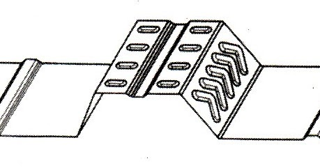

Jual Atap Lengkung di Palu ☎ 0822 4582 0777 (Rinanti)
Salah satu komponen terpenting dari sebuah bangunan baik itu kecil, sedang, besar maupun megah sekalipun pasti memerlukan atap. Atap adalah bagian penting sebuah bangunan yang fungsinya untuk menaungi sebuah bangunan. Layaknya projek pembangunan yang magak di tengah jalan karena tidak mempunyai atap yang bisa dipakai di atasnya. Salah satunya adalah atap galvalum, atap lengkung maupun genteng metal. Selain atap, galvalum juga berperan sebagai kerangka atap yang gunanya adalah untuk menopang beratnya atap. Banyak sekali jenis ragam atap mulai dari yang konvensional sampai modern yang dapat digunakan dalam sebuah pembangunan.
Distributor & Supplier Atap Lengkung

Baik atap lengkung tersebut terbuat dari besi, aluminium, galvalum, zincalum kayu dsb. Masing-masing atap lengkung mempunyai keunggulan dan kelemahan sendiri.
Bahan penutup atap haruslah dari bahan yang kuat menahan berbagai macam kondisi cuaca. Jarang sekali kami melihat bahwa atap galvalum lengkung ini dapat jatuh karena tiupan angin kencang.
Karena apabila atap lengkung tersebut sudah tertembus oleh air. Maka sudah pasti bahwa kualitas atap lengkung Palu tersebut sangat diragukan. Apabila anda sedang mencari atap lengkung Palu lengkung dari galvalum yang satu ini. Anda sudah berada di tempat yang tepat. Maka anda akan mendapatkan penawaran dengan harga terjangkau. Kami menyediakan atap lengkung Palu sesuai dengan keinginan anda.
Info Pemesanan Selengkapnya
Google Maps: https://www.google.com/maps/d/u/0/viewer?mid=1jTQUf9ULWdUIa8iDLwabVtcOdrQf8Eme&ll=-7.272623401464149%2C112.6482284&z=17
Note: https://www.facebook.com/notes/distributor-of-industrial-supply/pabrik-supplier-atap-lengkung/1782710675362145/
Event: https://www.facebook.com/events/137280070316926/
Portfolio Produk: https://www.facebook.com/pg/DistributorOfIndustrialSupplyDIS/photos/?tab=album&album_id=1683772021922678
Distributor & Supplier Besi Beton

Besi beton adalah besi yang digunakan untuk penulangan konstruksi beton atau biasa dikenal sebagai fungsi badan bertulang. Apa Cepetan merupakan besi yang dapat diaplikasikan pada suatu gedung karena bahan ini lebih mudah didapat dan juga harganya pun lebih ekonomis dibandingkan dengan penggunaan material lainnya. Berbagai macam tipe tersebut bisa Anda gunakan untuk pembangunan. Dan besi beton polos memiliki penampakan benda dengan permukaan licin atau tidak bersirip.
Jika anda saat ini sedang membutuhkan besi beton berkualitas tinggi. Anda bisa mendapatkan besi beton dengan harga yang sangat murah dan terjangkau. Jadi, anda tidak perlu ragu lagi.
Distributor & Supplier Steel Grating

Plat Grating tersebut dibuat dari jenis baja dengan kualitas yang tinggi kemudian dilas antara satu dengan yang lain. Umumnya, Grating digunakan untuk kolam renang. Grating tersebut sangat bermanfaat dan penting untuk keamanan Anda. Karena harga murah tidak menjamin adanya kualitas yang terbaik. Dengan mencaro steel grating kualitas terbaik, pastinya kualitas bangunan yang anda bangun akan lebih kokoh dan tahan terhadap berbagai cuaca. Plat Grating dapat Anda temui dimana saja. Bahan dasar yang digunakan untuk membuat Grating ini cukup berkualitas dan tidak diragukan lagi keamanannya.
Maka dari itu, jika anda membutuhkan steel grating untuk keperluan pembangunan, anda bisa langsung saja mengunjungi dis.or.id. Karena disana terdapat steel grating dengan harga yang sangat ekonomis pas dengan kantong anda.
Distributor & Supplier Pipa (Hitam/Gas, Galvanis)

Pipa hitam gas galvanis memiliki kekuatan yang tidak dapat diragukan, bagian luar pipa juga telah terlapis stainless steel sehingga menjadikannya tahan korosi. Kebanyakan orang memanfaatkan pipa hitam ini pada area pertambangan gas dan minyak, sebagian orang pun bahkan mengira bahwa nama asli dari pipa hitam memanglah pipa gas. Tentukan kebutuhan pipa hitam anda pada kami, tersedia ukuran ½ inc sampai 40 inc. Hubungi segera kontak yang telah tersedia untuk informasi lebih detail, kami menerima segala kebutuhan besi baja anda kapanpun dan dimanapun.
Distributor & Supplier Kawat Bronjong/Gabion

Kawat bronjong dikenal sebagai anyaman yang terbuat dari kawat di mana tujuannya agar tebing yang tinggi tidak longsor. Selain itu, sebenarnya kawat bronjong ini juga bisa dikatakan sebagai pemerkuat bukit. Hanya saja, Anda harus tahu kawat ini terbuat dari baja. Namun, ada juga kawat bronjong PVC yang dilapisi dengan plastik. Maka dari itu, kekuatannya untuk menahan tebing tinggi yang mungkin bisa longsor tidak perlu dipertanyakan lagi. Tujuannya agar tidak mudah tergerus ketika adanya arus air.
Untuk itu, kini kawat bronjong sangat banyak dibutuhkan pada segal bidang. Tak hanya itu, kawat bronjong yang disediakn juga terdapat bermacam ukuran.
Distributor & Supplier WF H-beam

Jenis profil baja struktural yang saat ini tengah populer di tengah masyarakat adalah besi WF. jenis besi WF banyak dimanfaatkan sebagai konstruksi baja. Besi jenis ini juga cocok untuk Anda pakai guna membangun rumah, industri, jalan raya, pagar, pabrik, dan masih banyak lagi lainnya. selain itu, besi ini ternyata memiliki kualitas yang terjamin sehingga tidak diragukan lagi.
Maka dari itu, kualitasnya sudah terjamin.
Untuk itu bagi anda yang sedang mencari besi baja dengan kualitas terbaik. Disana terdapat berbagai ukuran dari besi WF yang bisa anda pilih sesuai dengan kebutuhan anda. Pastinya dengan harga yang sangat terjangkau.
Distributor & Supplier Expanded Metal

Expanded metal ini bisa dibilang sebagai hasil dari kemajuan teknologi yang terbuat dari baja berkadar karbon rendah dengan kekuatan yang lebih tanpa harus di las serta tanpa menggunakan sambungan. Expanded Metal memiliki corak yang sangat unik dengan berbagai bentuk berbeda. Sedangkan untuk keunggulannya sendiri adalah memiliki bentuk yang indah dan juga homogen, lebih vareatif dalam hal pengaplikasiannya, relatif lebih ringan, dan lebih mudah dipasang.
Kini anda bisa membeli expanded metal yang anda inginkan dengan mengunjungi dis.or.id. Disana terdapat berbagai informasi mengenai expanded metal yang anda butuhkan. Kunjungi dis.or.id untuk memesan expanded metal dengan harga yang murah serta mutu yang terjamin.
Distributor & Supplier Plat (Hitam, Kapal, Bordes, Strip)
.jpg)
Plat kapal adalah plat yang sudah tentu diperuntukan untuk bahan pembuatan instalasi kapal, namun untuk pemakai material ini tidak hanya untuk kapal saja akan tetapi biasa dipergunakan untuk bahan tangki,konstruksi dan fabrikasi, perbedaan yang sangat khas untuk material ini adalah ditinjau dari segi ukuran yang lebar dan panjang. Namun selain itu anda juga dapat membeli nya secara online karena saat ini banyak sekali toko online yang melayani penjualan plat besi lembaran. Harga plat besi bordes, strip dan plat besi lainnya sangat terjangkau per meter persegi. Sebenarnya bila anda pernah melihat triplek, maka seperti itu lah plat besi hitam hanya saja terbuat dari besi. Plat besi bordes ini saat ini lebih banyak digunakan sebagai bahan pembuatan mobil, terutama mobil pengangkut seperti truk, pick up, dan lain sebagai nya.
Jika anda sedang mencari plat hitam, bordes, kapal dan jenis plat lainnya. Anda bisa langsung saja mengunjungi dis.or.id. Disana terdapat berbagai macam plat yang anda butuhkan dan pastinya dengan harga yang sangat terjangkau. Tak perlu lagi bingung mencari plat hitam yang murah dan berkualitas.
Distributor & Supplier Floor Deck (Bondex)

Floor deck atau bondek merupakan material pengganti material konvensional yang berbentuk seperti papan lebar atau triplek. Floor deck atau yang biasa disebut bondek adalah material yang berfungsi sebagai penyangga lantai cor. Menggunakan Floor Deck bisa mengurangi pemakaian perancah serta tiang-tiang penyangga sehingga akan lebih menghemat biaya. Sebagai pengganti tulangan positif searah.
Jika anda ingin mengetahui lebih lanjut mengenai floor deck ini, anda bisa langsung mengunjungi dis.or.id. Disana anda bisa mendapatkan floor deck yang anda inginkan.
Distributor & Supplier Atap Galvalum

Seng galvalum adalah bahan seng dengan berbagai kelebihan yang memiliki komposisi tertentu. Atap galvalum umumnya dijual dengan sistem per lembar.
Banyak sekali kelebihan yang dimiliki oleh atap galvalum ini. Selain memberikan banyak keuntungan, kesan pada rumah anda juga akan terlihat modern. Anda pastinya sudah banyak melihat rumah menggunakan atap jenis ini.
Galvalum diklaim mempunyai daya tahan karat 4x lebih kuat dari galvanis. Anggapan ini sangat keliru, karena galvalum bukanlah atap seng pada umumnya. Karena galvalum mempunyai daya tahan karat 4x dari galvanis. Jenisnya yang beragam dan banyak ukuran yang dapat disesuaikan mampu memenuhi kebutuhan anda.
Distributor & Supplier Truss Canal C
Besi kanal C dapat kita temukan hampir dimana saja. Jadi, galvalum adalah salah satu jenis baja terbaik dimana memiliki cirikas ringan dan tipis namun memiliki daya tahan, dan kekuatan yang sangat baik bahkan di klaim lebih baik bila kita bandingkan dengan baja konvesional. Sehingga akan awet bahkan dengan karat sekalipun. Cara pemasangannya besi kanal c dengan reng galvalum juga tidak boleh sembarangan. Besi kanal C ini selain digunakan untuk konstruksi bangunan dalam pembuatan atap, juga bisa juga dan banyak juga yang menggunakan nya sebagai bahan otomotif, seperti kerangka mobil, sepedamotor dan onderdil lain nya. Segala sesuatu juka diukur sesuai dengan ilmunya maka akan menghasilkan karya yang bangus serta hemat biaya. Kunjungi website dis.or.id untuk info lebih lanjut dan hubungi kontak yang tersedia sesuai dengan kebutuhan anda.
Distributor & Supplier Hollow Galvalum

Hollow Galvalum adalah bahan material bangunan yang terbuat dari logam dan bersifat anti karat. Kayu pun sudah digeser, dikarenakan keberadaan hollow galvalum ini. Namun dominasi bahan sebagian besar menggunakan alumunium dengan presetase rata rata 55%.
Bahan jenis ini memiliki banyak sekali kelebihan, selain tahan terhadap karat, hollow galvalum juga tahan terhadap serangan rayap dan juga memiliki beban yang cukup ringan. Untuk anda yang sedang membutuhkan hollow galvalum dalam jumlah kecil ataupun partai besar, dan sedang mencari hollow galvalum berkualitas harga murah. Dengan banyaknya cabang supplier kami dapat menjangkau pengiriman sampai ke pelosok Indonesia. Dan apabila memungkinakan, pilihlah produk yang berstandar SNI dan bersertifikat. Tertarik untuk membeli? Hubungi kami sekarang juga, karena kami memiliki penawaran menarik untuk anda.
Distributor & Supplier Seng Gelombang

Seng gelombang dijual dengan harga yang relatif murah dibanding genteng, hal inilah yang menjadi daya tarik besar penggunaannya. Kali ini seng gelombang hadir dengan desain warna yang menarik-menarik. Seng gelombang sekarang ini diburu banyak masyarakat untuk menutup bagian atap bangunan mereka. Ia lebih mudah di pasang dan harga jual yang ekonomis dipasaran membuat seng gelombang memiliki banyak peminat. Meskipun begitu, nyatanya seng gelombang memiliki kekurangan yakni ia lebih cepat menyerap panas.
Bila anda sedang mencari seng gelombang dengan keunggulan dan kualitasnya. Meskipun mahal, namun kami yakin bahwa anda tidak akan menyesal dengan berbagai jenis seng gelombang yang tersedia.
Distributor & Supplier Plat Seng

Plat seng dan plat galvalum banyak digunakan untuk berbagai kebutuhan, dari kebutuhan pembangunan rumah, industri, pabrik dan berbagai kegunaan lainnya. Masing masing ukuran tersebut memiliki harga yang berbeda beda, karena biasanya harga akan tergantung dari berat dalam kilogram.
Banyak orang yang selama ini hanya membeli seng galvalum tanpa mengetahui ukuran yang sesuai dengan kebutuhan nya. Jika anda penasaran dengan harga plat galvanis ini, silahkan hubungi customer service kami untuk menanyakannya. Hal hal tersebut memang menjadi ciri khas dari seng biasa pada umumnya.
Plat galvanis bisa anda dapatkan dengan membeli lembaran ataupun per meter, harga plat galvanis ditentukan dari ukuran yang anda inginkan. Oleh karena itu, peran atap pada sebuah rumah sangatlah penting.
Distributor & Supplier Genteng Metal

Genteng metal banyak dipilih karena memang lebih tahan lama, anti bocor, tidak berjamur, kesan yang diberikan pada atap rumah menjadi elegan dan indah selain itu juga karena harga yang lebih ekonomis. Penggunaan genteng metal memiliki kelebihan seperti tidak adanya biaya perawatan karena genteng tidak akan berkarat, jamur ataupun pecah. Salah satu dari kelebihan genteng metal adalah lebih membuat rumah anda bersih, rapi, lebih anti bocor, dan juga lebih ringan. Secara sederhana genteng metal adalah salah satu jenis genteng yang terbuar dari kumpulan berbagai bahan logam dan memiliki ciri kas mengkilat, ringan dan tahan lama. Dengan berbagai keunggulan yang sudah saya jabarkan diatas, maka apalagi yang anda tunggu untuk mendapatkannya? Segera dapatkan genteng metal tersebut di official situs kami di dis.or.id dan dapatkan penawaran menarik. Anda cukup menghubungi contact person yang sudah tertera di setiap industri yang anda butuhkan. Apakah anda sedang mencari genteng metal berkualitas? Maka anda berada di tempat yang tepat, silakan kunjungi dis.or.id dan dapatkan info menarik khusus untuk anda yang ingin segera mengetahui keunggulan genteng metal ini.
Apakah anda mencari genteng metal? Silakan kunjungi official site dis.or.id dan temukan info menarik untuk anda.
Distributor & Supplier Besi Wiremesh

Jika anda membutuhkan besi lonjor yang membentuk anyaman anda dapat membeli jenis besi wiremesh pada kami. Dengan struktur besi yang seperti itu, tidak heran bila banyak orang menilai besi wiremesh adalah besi anyam. Bentuk anyaman dari besi wiremesh sendiri bermacam-macam, ada yang membentuk kotak-kotak ada juga yang jajar genjang, anda dapat memilih sesuai kebutuhan. Manfaat besi wiremesh untuk kebutuhan konstruksi cukup banyak, ia bisa digunakan sebagai penguat dak beton, plat lantai, dan anak tangga. Setiap jenis besi wiremesh diperuntukkan untuk kebutuhan yang berbeda-beda, untuk itu anda harus memilih jenis wiremesh sesuai dengan kekuatannya. Bagi anda yang membutuhkan besi wiremesh, kini dapat memesan pada kami!
Distributor & Supplier Pagar BRC

British Reinforced Concrete / Pagar BRC merupakan pagar yang dibuat dari material beton dengan diameter variasi 5 mm – 8 mm tergantung dengan ukuran ketinggian. Potongan besi tersebut kemudian digabungkan dengan bantuan mesin las wiremesh. Pemanfaatan pagar BRC sendiri tergolong sebagai pagar minimalis yang siap digunakan untuk melindungi sebuah bangunan. Apalagi mengingat kekuatan pagar BRC tidak dapat diragukan lagi, karena pagar ini diproduksi dengan baja bertegangan tinggi U55 grade dengan tegangan ijin 2900kg/cm2 sekitar 2. 5 kali dari kekuatan besi biasa. Pagar BRC memiliki daya tahan sampai > 10 tahun karena ia tergolong besi yang tahan karat karena sudah terlapisi dengan lapisan galvanis. Disini kami siap menerima pesanan pembuatan pagar BRC untuk anda yang membutuhkan.
Distributor & Supplier Kawat Loket, Kawat Harmonika

Kawat loket harmonika sering sekali diaplikasikan pada kebutuhan kawat pagar dan penutup jendela, hal ini tentu tidak tidak lain karena struktur bentuk dari kawat loket harmonika sendiri mirip seperti anyaman yang kuat. Tak hanya sampai disitu, kebutuhan akan kawat loket harmonika mencakup berbagai bidang industri, baik keperluan rumahan sampai industri. Apalagi bila anda membeli jenis kawat loket harmonika yang sudah terlapisi dengan galvanis sehingga ia awet dan tahan terhadap korosi. Apalagi bila jenis kawat harmonika yang digunakan adalah galvanis yang terkenal tahan karat maupun korosi sehingga sangat awet. Untuk informasi selengkapnya, anda dapat menghubungi kami, terlah tersedia kawat loket harmonika dengan diameter 1,5 mm – 4 mm, disertai lubang 20 mm sampai 70 mm tergantung dengan kebutuhan anda. kami dapat memenuhi kebutuhan kawat loket harmonika anda dengan beragam ukuran, maksimal ukuran yang diterima adalah 3 meter.
Distributor & Supplier CNP & UNP

Besi UNP merupakan besi kanal yang melengkung dan membentuk huruf U, pengaplikasian besi ini sendiri biasanya pada sambungan atau dudukan atap. Besi UNP juga cocok diaplikasikan untuk kebutuhan girts / penutup dinding. Spesifikasi dari besi UNP sendiri sebenarnya hampir sama dengan besi WF, hanya saja besi UNP lebih mudah melengkung untuk itu sangat jarang pengaplikasiannya pada kolom bangunan. Sedangkan untuk kembarannya sendiri, besi CNP banyak digunakan untuk keperluan cladding dan gording. Banyak orang yang menyebut besi CNP ini sebagai profil C karena bentuknya melengkung seperti huruf C, meskipun begitu besi UNP dan CNP adalah material konstruksi yang berbeda. Bagi anda yang berminat menggunakan besi CNP tentu sangat bersyukur, karena besi ini sangat fleksibel dan ia bisa dimodifikasi dari plat koil dengan teknik cutting. Anda tak hanya bisa manfaatkan untuk kebutuhan konstruksi saja, bahkan untuk kebutuhan otomotif sekalipun.
Distributor & Supplier Besi Siku

Setiap konstruksi bangunan pasti menggunakan material konstruksi besi siku ini untuk kebutuhan bagunan. Bentuk besi siku sudah terukur sehingga bisa dijadikan penyangga yang bisa diandalkan. Pada umumnya besi siku yang banyak digunakan dalam kehidupan sehari-hari adalah besi siku sama sisi, dimana ia membentuk dua garis tegak lurus yang membentuk 90 derajat. Untuk panjangnya, pada umumnya besi siku dibuat dengan ukuran 6 meter dan ketebalan lebar yang berbeda-beda. Kami menerima segala kebutuhan anda mengenai besi siku ini! Tentu saja produk yang kami tawarkan berkualitas unggul. Anda dapat memesan besi siku dengan berbagai ukuran pada kami. Butuh informasi lebih lengkap lagi? Kunjungi saja situs resmi kami di www.dis.or.id Informasi lebih detail akan anda dapatkan dengan menghubungi kontak yang tertera pada website dis.or.id.
Distributor & Supplier Hollow (Hitam, Galvanil, Galvanis)

Sekarang ini besi hollow pemanfaatannya sudah melebihi kayu, meskipun terbuat dari besi kualitasnya pun tidak dapat diragukan lagi.Sekarang sudah banyak orang yang beralih pemanfaatan dari kayu menjadi menggunakan besi hollow.Banyak orang yang mulai beralih dari pemanfaatannya yang menggunakan kayu beralih pada hollow hitam galvanil.Besi hollow saat ini menjadi material pengganti kayu yang sangat baik. Dengan menggunakan material ini pembangunan konstruksi juga bisa selesai lebih cepat sehingga meminimalkan upah pekerja. Jika saat ini anda membutuhkan besi hollow, anda dapat menghubungi kontak yang telah tersedia atau kunjungi saja website resmi kami di dis.or.id. Kami telah menyediakan besi hollow hitam galvanil galvanis yang bisa anda pesan langsung. Apabila anda membutuhkan material hollow hitam, kami dapat melayani kebutuhan anda tersebut dengan berbagai spesifikasi ukuran. Kami pun merupakan distributor relasi dari dis.or.id yang menawarkan produk hollow hitam galvanil galvanis dengan kualitas terbaik dan harga yang murah. Anda bisa menghubungi kontak yang telah tersedia untuk informasi produk lebih detail. Manfaat besi hollow dalam kehidupan ini banyak sekali, diantaranya untuk keperluan pagar, teralis, pintu besi, dan berbagai kebutuhan lain. Butuh info lebih lanjut? Anda dapat menghubungi kontak yang telah tersedia. Untuk informasi detail mengenai panjang dan harganya, segera hubungi kami. Anda bebas untuk menentukan ukuran pesanan besi hollow yang dibutuhkan pada kami. Jika anda membutuhkan besi hollow maka sebelum memesan pada kami anda harus melakukan perhitungan kebutuhan dahulu, seperti berapa panjang dan ketebalan yang diperlukan. Untuk itu hubungi kontak kami segera!
Distributor & Supplier Pipa Pancang

Kalau membahas pipa pancang, tentu saja salah satu konstruksi penting dalam sebuah proyek ini sudah banyak di kenal. Sedangkan dari namanya saja tetu sudah sangat familiar dengan konstruksi yang satu ini. Tidak dapat di pungkiri lagi, fungsi pipa pancang ini sangatlah penting. Hal ini bertujuan untuk memudahkan penyesuaian. Nah, bagi Anda yang sedang membutuhkan pipa pancang, jangan khawatir karena Anda bisa mendapatkannya dengan mudah. Termasuk juga di Industri DIS. Bukan hanya kualitas bahannya saja yang bagus tetapi juga untuk pembuatannya. Dengan begini, maka dalam penggunannya, pipa pancang juga bisa di aplikasikan secara maksimal.
Jasa Pondasi Bor (Strouss/Borepile)

Selanjutnya, dalam setiap pembangunan, pengeboran pondasi tentu saja adalah salah satu hal penting yang harus di perhatikan. Nah, jika Anda bingung terkait hal itu, kini ada banyak jasa yang bisa menjadi jalan keluar Anda dalam pelayanan pondasi bor. Selanjutnya, untuk masalah di mana jasa ini bisa di temukan, maka Anda bisa memesannya di sini dengan mudah. untuk masalah kualitas pun tidak perlu di pertanyakan lagi karena hasilnya akan sangat terjamin mengingat pelakunya adalah mereka yang sdah berpengalaman dan merupakan jasa profesional. Pelakunya pun merupakan orang-orang terlatih yang sadah profesional dan lebih berpengalaman. Dalam prosesnya, pengeboran ini akan menimbulkan suara bising karena mesinnya yang sedang bekerja. Namun bisa lebih mengurangi gangguan karena tidak menimbulkan getaran.
Distributor & Supplier Genset (New/Second)

Untuk genset atau singkatan dari generator set ini, pasti juga sudah banyak di kenali. Produk yang satu ini merupakan penghasil ternaga listrik yang dalam penggunaannya memanfaatkan bahan bakar berupa solar. Sedangkan untuk pembelian, memang ada genset yang masih dalam kondisi baru mapun genset yang sudah bekas atau second. Dan keduanya pun bisa Anda dapatkan di DIS.
Dengan harga genset yang cukup tinggi, memang akan lebih ringan jika membeli genset yang sudah second. dengan demikian, pastilah akan lebih meringankan manakala Anda memilih genset yang sudah bekas. genset sendiri tersedia dalam berbagai pilihan merk sesuai perusahaan yang mengeluarkan nya dan bisa Anda jadikan pilihan mana yang sekiranya paling sesuai.
Distributor & Supplier UPS

Kalau menyebut UPS, mungkin akan banyak yang bertanya-tanya sebenarnya apa sih barang yang satu ini. Sedangkan pengertian UPS sendiri merupakan salah satu dari sekian banyak alat elektronik yang mampu di jadikan sebagai sumber listrik sementara manakala sumber utamanya terputus. Sebenarnya bisa di akui bahwa memiliki nya sangatlah penting. apalagi bagi pengguna komputer. Sedangkan dari jenisnya sendiri, UPS memang sangatlah bervariasi. Bukan hanya kualitas spesifikasi yang berbeda, akan tetapi juga kapasitas listrik yang bisa di simpan. Mulai dari kualitas maupun kapasitas yang di miliki. mengingat akan hal tersebut, maka Anda bisa memilih yang paling pas untuk pembeliannya.
Distributor & Supplier Forklift (Second)

Kini forklif memang cukup banyak di gunakan baik dalam industri kecil, menengah maupun besar. oleh karena itu penjualan forklif pun banyak di mana-mana termasuk di sini. karena itu pula, penjualan forklif sendiri banyak di temukan di mana-mana. sedangkan dari sisi kualitas barang yang di tawarkan di sini, jangan khawatir karena tentu saja akan sangat memuaskan. Dengan jaminan kualitas yang memadai ini, bisa di pastikan segala aktifitas industri Anda akan berjalan lebih lancar lagi. selain itu memilikinya pun juga akan sangat menguntungkan karena ketika tidak terpakai maka Anda bisa menjualnya kembali. Selanjutnya, jika memang suatu saat forklif tidak di gunakan , bisa Anda jual pada distributor di sekitar dengan mudah. Sedangkan yang lebih menguntungkan lagi darinya adalah, ketika Anda sudah tidak memerlukannya, maka bisa di jal kembali pada distributor forklif.
Jasa Pembuatan Moulding Inject

Anda sedang bingung akan membuat inject moulding? Terkait akan hal tersebut, jangan khawatir karena saat ini ada banyak penawar jasa, termasuk yang di sarankan DIS, yang siap membantu Anda. Jasa tersebut akan selalu siap membantu Anda. Selain itu, masalah kualitas pun juga tidak kalah karena moulding inject yang di hasilkan memiliki kualitas terbaik. Bahkan ketika Anda bingung ide, ada banyak pilihan yang bisa di gunakan dan di sesuaikan dengan kebutuhan. Anda tidak perlu khawatir terkait hal itu karena moulding inject yang di hasilkan pun juga merupakan kualitas yang terbaik. Selanjutnya, silahkan Anda sesuaikan pilihannya dengan kebutuhan yang sedang Anda cari.
Jasa Pembuatan Sparepart Mesin Produksi / Alat Berat

Dalam setiap proyek pembangunan, adanya alat berat atau sparepart tentu bukanlah hal yang asing pula. Bukan hanya dalam penggunaannya, akan tetapi juga pembuatannya. Karena itulah, untuk memilikinya, silahkan Anda memilih jasa terpercaya di mana salah satunya di tawarkan di DIS. Karena itulah di perlukan pembuatan yang tepat sehingga hasilnya sempurna dan bisa bekerja secara maksimal. Sedangkan harga penawaran, untuk setiap alat berat bisa berbeda tergantung jenis dan ukurannya. Semakin baik spesifikasi nya, tentu akan semakin mahal. Jadi berapa harga dalam pembuatan setiap satuannya tergantung pada bagaimana spesifikasi yang di miliki. Nah, kalau di DIS, maka Anda pun akan mendapatkan alat berat yang berkualitas dan di jamin aman.
Jasa Service Elektronik (Kompor Gas, Dispenser, Mesin Cuci)

Kini elektronik memang semakin banyak di gunakan di kalangan masyarakat. oleh karena itulah di DIS sendiri juga menyediakan jasa service elektornik seperti kompor gas, dispenser dan mesin cuci. Sedangkan di industri DIS pun Anda juga bisa mendapatkan jasa tersebut. Industri DIS sendiri juga menyediakan jasa sedemikian rupa. Nah, kalau masalah servicenya sendiri sebenarnya Anda bisa juga melakukannya pada barang-barang yang harus di cek saja sekalipun tidak ada keluhan secara spesifik. Selain untuk perbaikan, Anda pun bisa juga hanya melakukan pengecekan tanpa keluhan sebagaimana service pada umumnya.
Banyak manfaat yang bisa didapatkan hanya dengan memasang atap sebagai peneduh bangunan anda. Hanya bangunan yang terbengkalai yang tidak mempunyai atap. Dari rumah paling kecil hingga bangunan termegah sekalipun pasti membutuhkan atap sebagai kebutuhan utamanya. Tak terkecuali berbagai jenis atap yang sudah saya jabarkan diatas. Karena rumah paling kecil sekalipun pasti mempunyai atap di atasnya. Dengan senang hati, kami akan memberikan solusi untuk setiap kebutuhan dan keperluan anda. Maka, dengan senang hati kami akan membantu anda.